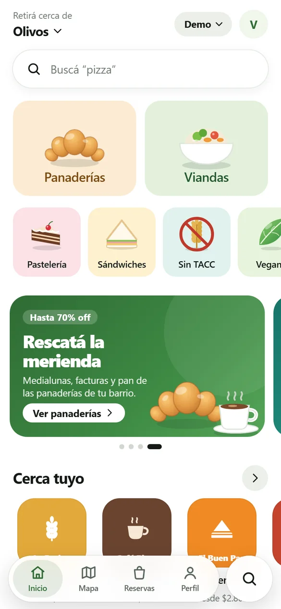
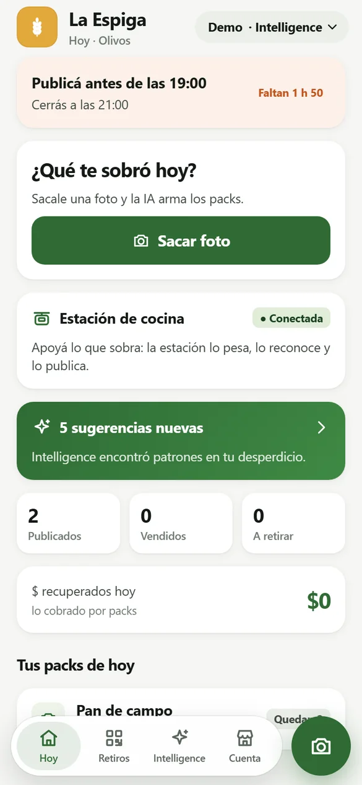
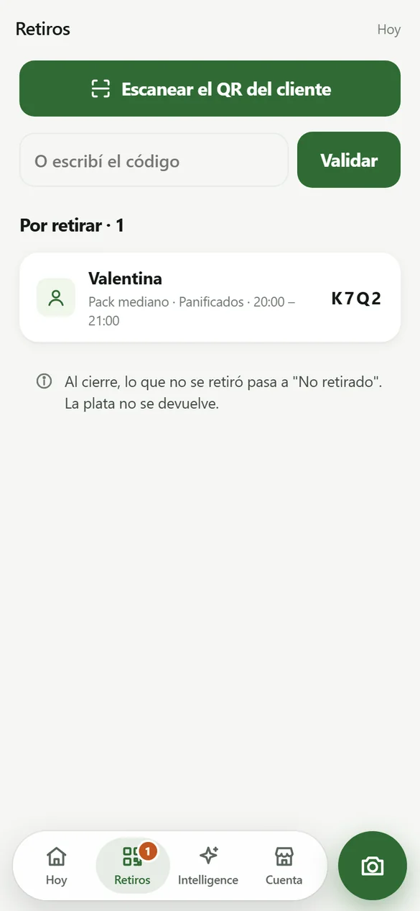

Mirás qué hay cerca
El mapa muestra los locales con packs disponibles hoy, a cuántas cuadras están y hasta qué hora se pueden retirar. Filtrás por tamaño, por categoría o por sin TACC, vegetariano y vegano.

Demo abierta · Zona Norte del GBA
Las panaderías, cafés y restaurantes de tu barrio publican su excedente del día antes de cerrar. Vos lo comprás a mitad de precio y lo pasás a buscar. El local recupera plata de algo que hoy tira.
Se instala desde el navegador, sin pasar por ninguna tienda de apps.

La demo es la app de verdad, con datos simulados.
Nuestro ecosistema
Primero se recupera el excedente. Después se mide con precisión. Al final, se usa el histórico para producir menos.
Mapa con los locales que tienen packs hoy, reserva desde el celular y retiro con un código QR. Con filtros por tamaño, categoría y condición alimentaria.
Ver cómo funcionaPublicar lo que sobró en el peor momento del día tiene que durar menos de un minuto. Por eso la carga es una foto y la app propone los packs, el precio y el horario.
Ver la plataformaCada publicación deja registro de qué sobró, cuánto y cuándo. Con eso se comparan sucursales, se arman sugerencias y se mide el impacto.
Ver IntelligenceCómo funciona
El mapa muestra los locales con packs disponibles hoy, a cuántas cuadras están y hasta qué hora se pueden retirar. Filtrás por tamaño, por categoría o por sin TACC, vegetariano y vegano.
Cada pack dice qué tipo de comida trae, cuánto pesa aproximadamente y cuánto valía a precio de lista. Es sorpresa: el contenido exacto lo ves al retirarlo.

Te queda un código de cuatro letras y un QR. Lo mostrás en el mostrador dentro de la franja de retiro y listo. No hay delivery: por eso el precio baja a la mitad.

Ponés sobre el mostrador lo que te sobró y le sacás una foto desde el celular del local. No hay formulario, ni lista de productos, ni integración con tu sistema de ventas.

Reconoce qué es, estima cuánto hay y propone packs con precio y horario de retiro. Vos corregís lo que haga falta y publicás, en el peor momento del día.

Escaneás el QR del cliente o escribís su código. Al cierre, lo que no se retiró queda registrado igual: esa también es información sobre tu día.

Sustentabilidad
Vender el excedente es la parte fácil y cualquiera la puede copiar. Lo difícil es juntar, comercio por comercio, qué sobra, cuánto y a qué hora, y devolverlo en forma de decisiones: producí dos bandejas menos los martes, sacá el pack a las 19 en vez de a las 20.
Si funciona, con el tiempo cada local publica menos packs. Es un objetivo raro para un marketplace y es a propósito.
Cómo medimos el impactoEl proyecto, sin maquillaje
Aprovecho es un proyecto en desarrollo, no una empresa en operación. La demo está abierta para que cualquiera la revise, así que conviene decir con qué se va a encontrar.
El detalle del mercado, los comparables y lo que estamos reconstruyendo está en Inversores.
Queremos arrancar la validación en Vicente López, San Isidro y Pilar. Si tenés una panadería, un café, un restaurante o un supermercado de barrio, escribinos: queremos entender qué te sobra y cuándo antes de prometerte nada.
EscribirnosO probá la app ahora
Se abre en el navegador y se puede agregar a la pantalla de inicio, como cualquier app.
Abrir la demo